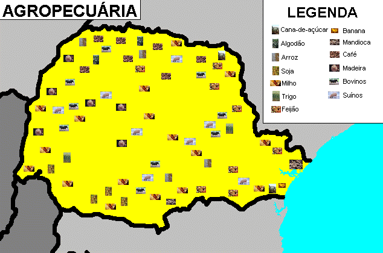

Festejando a Conexão - CAMPO E CIDADE
"Festejando a Conexão" é mais do que um site; é o catalisador para uma nova era de colaboração. Nossa intenção é criar uma ponte sólida e confiável entre o campo e a cidade, facilitando transições econômicas justas e sustentáveis. Acreditamos no potencial da interconexão para fortalecer comunidades e impulsionar a economia local.
PRODUTOR

Produtores próximos de você! Encontre e conecte-se com produtores locais que oferecem produtos frescos e de qualidade. Descubra fazendas orgânicas, produtores de laticínios artesanais, e muito mais. Nosso objetivo é facilitar a sua busca por produtos de origem confiável e fortalecer a economia rural.
Informações Detalhadas do Produtor:
- **Nome:** [Nome Completo do Produtor/Fazenda Exemplo: Fazenda Esperança]
- **Localização:** [Exemplo: Sítio Primavera, Km 5, Zona Rural, Campinas - SP, 13000-000]
- **Contato:** [+55 (19) 91234-5678], [contato@fazendaesperanca.com.br]
- **Especialização:** [Culturas principais: Hortaliças Orgânicas, Frutas Exóticas, Produção de Ovos Caipiras]
- **Tipos de Cultivo:** Orgânico certificado, Cultivo Sustentável, Agroecológico
- **Certificações:** Selo Orgânico Brasil, ABIO, Produtor Familiar CNPJ
- **Métodos de Entrega:** Retirada na Fazenda (com agendamento), Delivery em cidades próximas, Pontos de Coleta parceiros (feiras orgânicas)
Nossa plataforma oferece ferramentas intuitivas para que produtores possam gerenciar seus estoques, divulgar novos produtos, e interagir diretamente com consumidores e comerciantes. Simplifique sua logística e aumente suas vendas conectando-se à rede Farm Inc.
Farm Inc
Explore os produtores e produtos próximos a você!
Use o mapa para encontrar os melhores produtos da sua região.
INFORMAÇÕES
Para mais detalhes sobre a Farm Inc, nossos produtores parceiros e a variedade de produtos disponíveis, confira as informações abaixo. Estamos aqui para conectar você ao melhor do campo, oferecendo transparência e facilidade no acesso a alimentos de qualidade.
Detalhes de Contato e Suporte:
Nosso Catálogo de Produtos Agrícolas:
- **Grãos de Qualidade Superior:** Soja não-transgênica, Milho doce, Trigo para panificação, Arroz integral, Feijão carioca e preto selecionados.
- **Frutas Frescas e Sazonais:** Maçãs Fuji e Gala, Bananas Prata e Nanica, Laranjas Pera e Lima, Uvas Niágara e Thompson, Morangos, Mirtilos e Framboesas orgânicas.
- **Vegetais Colhidos na Hora:** Alface crespa e americana, Tomates cereja e italianos, Cenouras, Brócolis, Couve-flor, Pimentões de diversas cores, Batatas e Mandiocas.
- **Laticínios Artesanais e Frescos:** Leite pasteurizado integral e desnatado, Queijos frescais (minas, mussarela), Queijos curados (parmesão, provolone), Iogurtes naturais sem adição de açúcar, Manteiga de garrafa.
- **Carnes de Origem Sustentável:** Cortes bovinos (picanha, alcatra), Suínos (costelinha, pernil), Aves caipiras, Ovos frescos de galinhas criadas soltas.
- **Produtos Processados e Artesanais:** Mel puro de abelhas nativas, Geleias de frutas regionais (goiaba, jabuticaba), Pães de fermentação natural, Conservas diversas, Doces de leite, Compotas.
- **Flores e Plantas Ornamentais:** Buquês de flores do campo, Rosas, Orquídeas, Suculentas e uma variedade de plantas para paisagismo e jardinagem.
- **Azeites e Óleos Especiais:** Azeite de oliva extra virgem de produção local, Óleos vegetais prensados a frio (girassol, milho).
Estamos comprometidos em oferecer uma ampla gama de produtos que atendam às necessidades e preferências de nossos clientes na cidade, enquanto garantimos um preço justo e reconhecimento aos produtores do campo.